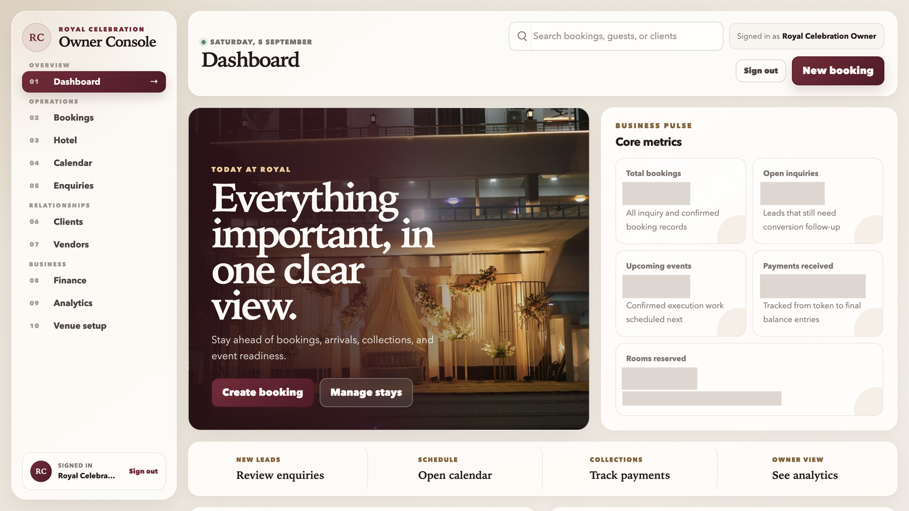

Hospitality · Deployed
One workspace for the whole venue.
Bookings, hotel stays, vendors, and payments for Royal Celebrations.
Read case study →Billing, stock, admissions, approvals, and reporting. We turn the way you work into one connected system.
Based in Nagpur, India. Available for projects in India, the UK, US, and UAE.


Bookings, hotel stays, vendors, and payments for Royal Celebrations.
Read case study →
Farmer reporting, feed movement, and health records for Utsav Feed Industries.
Read case study →SrS Logics is led by Shubham Singh, founder, working across product, engineering, and client reviews.
We agree the scope, show working releases, and document the handover. You know what is being built and what comes next.
“Billing, stock, payments, and balances all feel much more clear and under control.”
Internal business platforms, dashboards, finance software, workflow tools, and business-specific data systems.
From Nagpur, India. We are available for projects in India, the UAE, the United Kingdom, and the United States.
A focused first release may reach production review in 4 to 6 weeks. Larger platforms use staged timelines.
Six months of post-launch maintenance is generally included unless the signed engagement says otherwise.
Use ready-made SaaS when it fits. Custom software becomes useful when your roles, approvals, data, or operating rules do not.
A short call to understand the process, the people, and what needs to change.